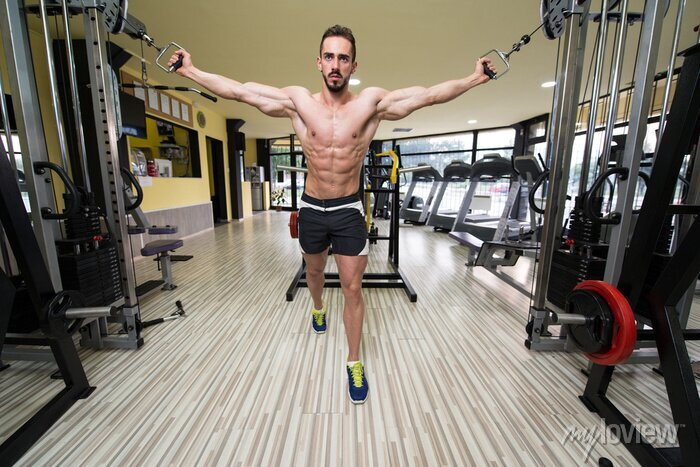
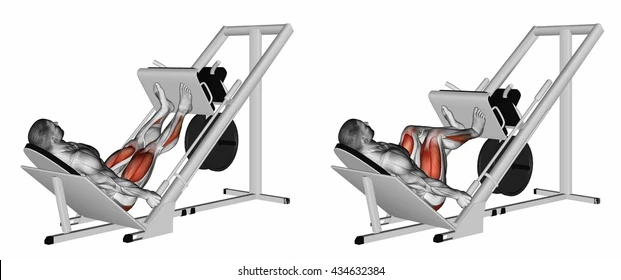
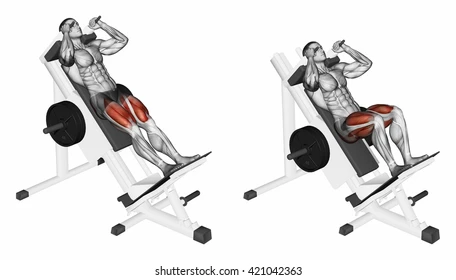

TREINO A:
PEITORAL + TRÍCEPS + TRAPÉZIO
AQUECIMENTO:
1 - ALONGAMENTO
2 - 5 mins AERÓBICO
TRAPÉZIO
REMADA ALTA BARRA 4 X 12 CARGA MÉDIA

ELEVAÇÃO DE OMBRO HALTERES 4 X 12 CARGA MÉDIA

REMADA ALTA ANILHA 4 X 12 CARGA MÉDIA

PEITORAL
CROSSOWER 3 X 12 CARGA MÉDIA
SUPINO INCLINADO HALTESRES 4 X 10 CARGA MÉDIA

SUPINO RETO BARRA 3 X 10 CARGA MÉDIA

PULLOWER HALTERES 3 X 12 CARGA MÉDIA
Obs: Fazer este exercicio com a Anilha

TRÍCEPS
TRÍCEPS GRÁVITON 3 X 12 CARGA MÉDIA

TRÍCEPS TESTA CORDA 4 x 10 CARGA MEDIA

TRÍCEPS PEÃO CORDA 3 X 10 CARGA MÉDIA

TRÍCEPS MERGULHO 3 X 10 CARGA MÉDIA

FINALIZANDO
ABDOMINAL BICICLETA 4X 25seg

+15 Mins AERÓBICO
TREINO B:
BÍCEPS + COSTA + PANTURRILHA:
AQUECIMENTO:
1 – ALONGAMENTO
2 – APOIO DE FRENTE 3 X 20
+REMADA SENTADA 3 X 20 CARGA LEVE
BÍCEPS + ANTEBRAÇO
ROSCA DIRETA SCOOT 4 X 10 CARGA MÉDIA

ROSCA CONCENTRADA 3 x 12

ROSCA DIRETA POLIA 4 X 10 CARGA MÉDIA
Obs: Fazer exercicio com barra grande

ROSCA MARTELO 3 X 12 CARGA MÉDIA

COSTA
REMADA SENTADA 4 X 12 CARGA MÉDIA

PUXADOR PULLOWER 3 X 12 CARGA MÉDIA

REMADA UNILATERAL 4 X 10 CARGA MÉDIA

PUXADOR FRONTAL 3 X 10 CARGA MÉDIA

PANTURRILHA
PLANTAR EM PÉ 3 X 21 CARGA MÉDIA

PANTURRILHA SENTADA 3 X 15 CARGA MÉDIA

PANTURRILHA LEG 3 X 15 CARGA MÉDIA

FINALIZANDO:
EXTENSÃO DE TRONCO 3 X 15

+10 Mins AERÓBICO
TREINO C:
MEMBROS INFERIORES + OMBRO
AQUECIMENTO:
1 - ALONGAMENTO
2- +5 Mins AERÓBICA + 3 X 15 AGACHAMENTO SISSY
MMI
EXTENSÃO JOELHO 3 X 10 CARGA MÉDIA

EXTENSÃO JOELHO UNILATERAL 3 X 12 CARGA MÉDIA

FLEXORA EM PÉ 3 X 10 CARGA MÉDIA

LEG 45 4 X 10 CARGA MÉDIA
HACK 45 4 X 10 CARGA MEDIA
AGACHAMENTO HALTERES 3 X 12 CARGA MÉDIA
Obs: comece pegando o equipamento se agachando,busque manter a postura reta nos joelhos sem o inclinar para dentro

ADUÇÃO DE QUADRIL 4 X 12 CARGA MÉDIA

ABDUÇÃO DE QUADRIL 3 X 12 CARGA MÉDIA

OMBRO
ABDUÇÃO DE OMBRO 3 X 10 CARGA MÉDIA
Obs: Não mantenha os braços muito retos, incline os um pouco para frente
FLEXÃO OMBRO UNILATERAL 3 X 10 CARGA MÉDIA

DESENVOLVIMENTO MAQ. 3 X 10 CARGA MÉDIA

FINALIZANDO:
ABDOMINAL MÁQUINA OU SOLO 5 x 20
ABDOMINAL FLEXÃO DE QUADRIL 4 X 20 OU PRANCHA 3 X 45seg
OBS: O TIPO DE ABDOMINAL É OPCIONAL, PODENDO O ALUNO VARIAR.
+10 Mins AERÓBICO